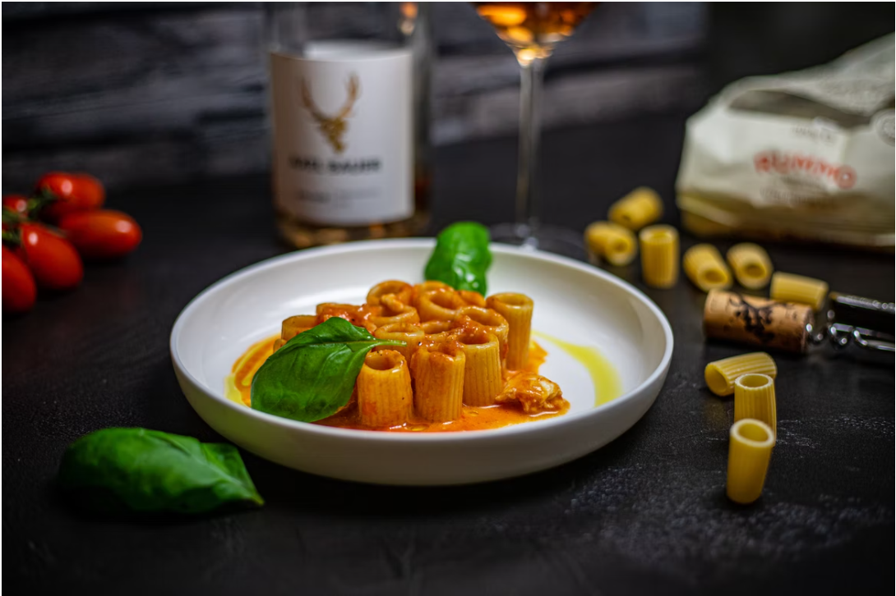

|

|
Procedure:
-
Fill a stock pot or other large pot three-quarters full with water
and heat over high. Toss in a handful of salt and bring to a boil
while you do your other prep.
- Peel and finely chop 1 onion.
-
Firmly smash 4 garlic cloves with the flat side of a chef’s knife
and remove peel.
-
Grate 4 oz. Parmesan on the smallest holes of the box grater.
-
Heat 2 Tbsp. oil in a Dutch oven over medium (position it next to
pot of water). Add onion and garlic and cook, stirring constantly,
just until onion is starting to brown around the edges, 5–7
minutes.
-
Add entire 4.5-oz. tube tomato paste and ½ tsp. red pepper flakes
and stir until paste evenly coats onion. Continue to cook,
stirring often, until paste is deep red and starting to brown on
bottom of pot, 5–7 minutes.
-
Add 2 oz. vodka to deglaze pan and stir to incorporate, scraping
bottom of pot. Reduce heat to low.
-
Using a heatproof glass measuring cup, scoop about ¼ cup boiling
water from pot, then add ¾ cup heavy cream to measuring cup (this
brings up the temperature of the cream so it won’t break when you
add it to the pot).
-
Slowly add warmed cream to Dutch oven, stirring constantly, until
a smooth sauce forms. Remove from heat.
-
Add 1 lb. rigatoni to pot of boiling salted water and cook
according to package instructions until al dente. About 1 minute
before the timer goes off, use heatproof measuring cup to scoop up
about 1 cup pasta cooking liquid. Heat Dutch oven over low.
-
Using a spider, transfer rigatoni to Dutch oven along with any
water that’s piggybacking on the pasta.
-
Add ½ cup pasta cooking liquid to Dutch oven and stir to
incorporate, then gradually add half of Parmesan, stirring
constantly to melt cheese. You should have a smooth, glossy sauce
that coats each piece of pasta. Season with salt and add a splash
more pasta cooking liquid to thin sauce, if needed.
-
Divide pasta among bowls. Top with remaining cheese, dividing
evenly. Drizzle with more oil, then tear basil leaves over.
Enjoy!
|
|
Before you dismiss the notion that an onion, tomato paste, and cream
can be merged in minutes to create one of the tastiest homemade
pasta sauces you've ever had, consider this. Make this dish for
yourself, if you haven't already. Simply use double-concentrated
tomato paste, which has far more flavor than ordinary tomato paste.
Cooking Time: 30 min
Difficulty: Easy
Origin of Dish: Italy
|